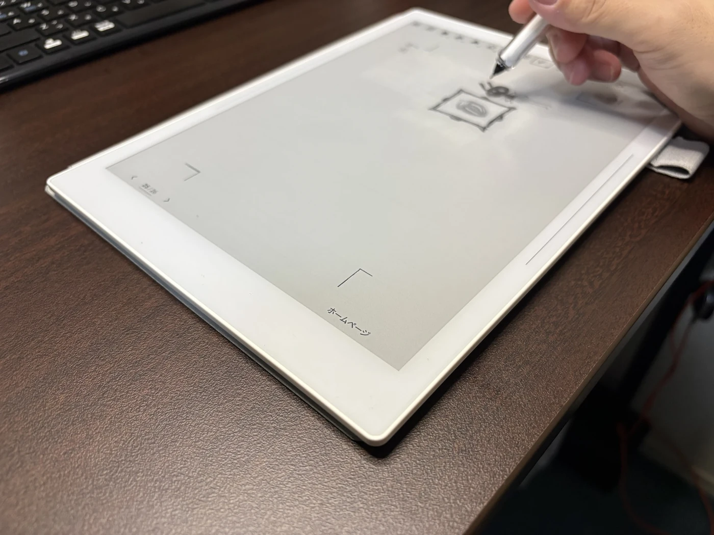
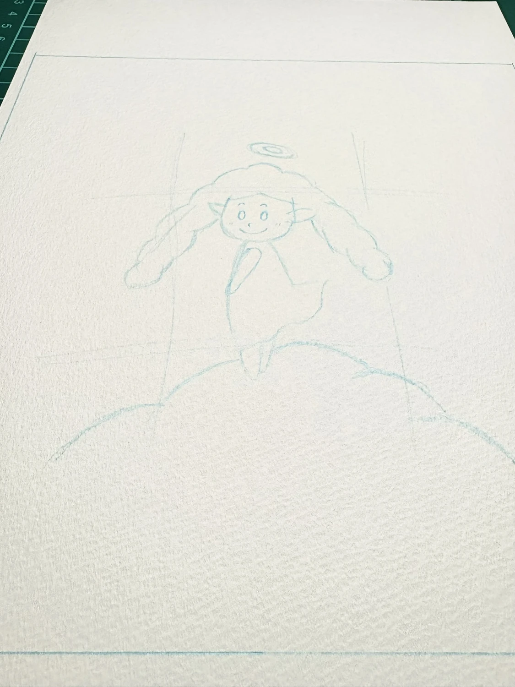
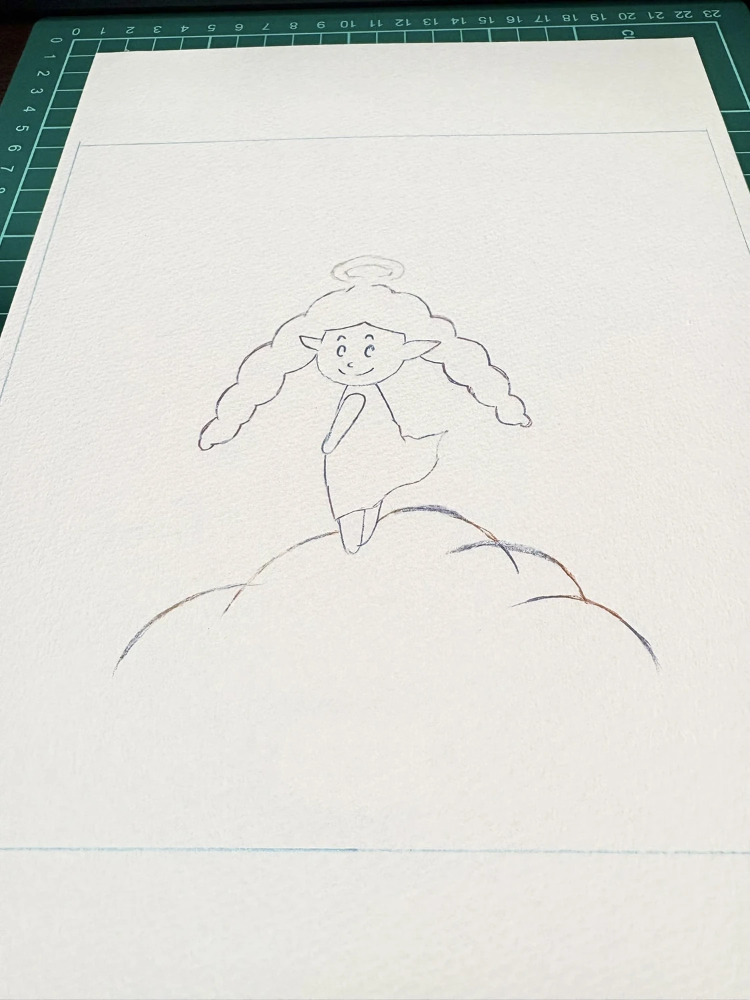
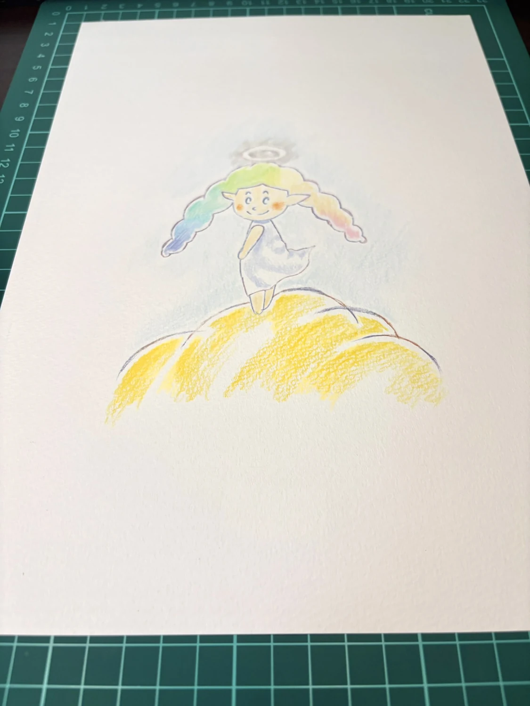
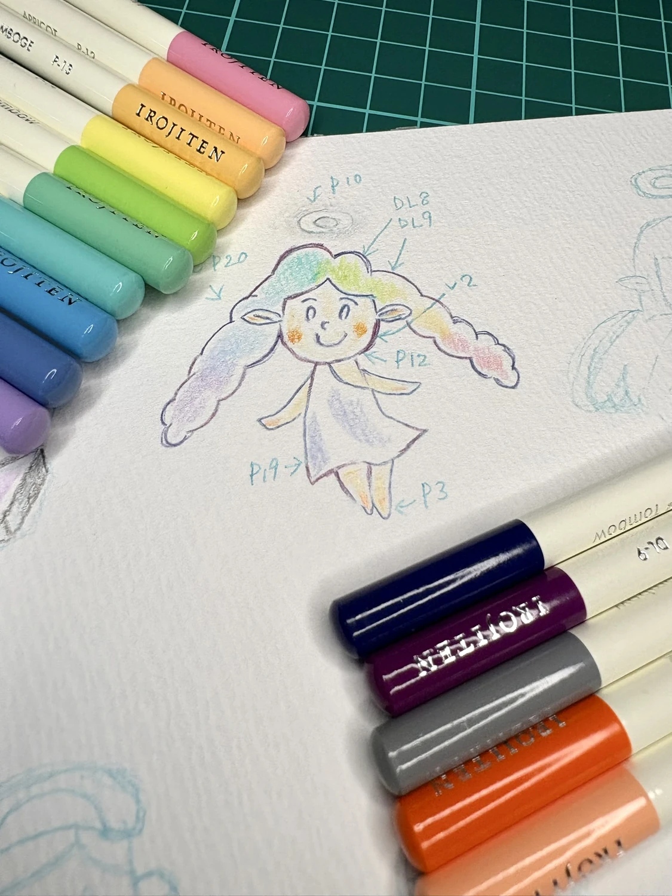

ATELIER
小さな制作室
完成した絵の、その少し手前。
描いている時間や、作品が生まれる途中を残しています。

AT THE DESK
今日も、
少しずつ描いています。
絵が生まれる途中も、小さな作品だと思っています。
画面に向かう時間も、紙に色を重ねる時間も。小さな手の動きが、次の絵につながっていきます。
MAKING RECORD · 01
『てんしのクレヨン』ができるまで
約10年のあいだ大切にされてきた物語に、少しずつ絵を添えました。

物語を読み、最初に浮かんだ天使の姿を探しました。

表情やかたちを整え、色を迎えるための線を描きました。

色を少しずつ重ねて、絵にやさしい空気を添えます。

道具を並べ、ページごとの色を確かめながら進めました。
小学生のころに生まれた物語が、たくさんの人に見守られ、2026年、一冊の絵本になりました。
絵本の背景を読む ↗